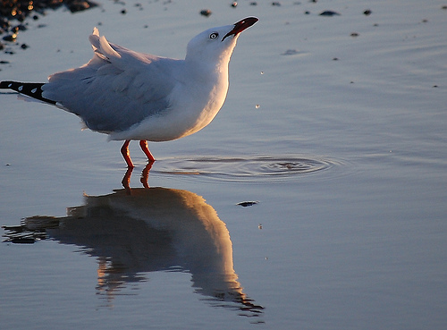

Reflection

Phase-o | Week-2
Materi, konsep, kegiatan, dan bagian apa saja yang berjalan baik? Keberhasilan dan masalah apa yang kamu hadapi?
Materi, konsep semua berjalan baik. Hanya tugas saja yang berjalan kurang baik untuk saya, karena memang saya belum begitu siap dan mahir dengan ilmu baru JavaScript.
Hal apa saja yang terpikirkan atau tanyakan saat coding? Referensi lain apa saja yang membantumu menjawabnya?
Semua tentang JavaScript saya tanyakan, karena memang saya masih sangat awam dengan ilmu ini. Terima kasih untuk google, youtube dan situs-situs belajar yang bisa menjawab sebagian dari permaslahan dalam belajar. Bila saat ini pertanyaan saya belum terjawab, mungkin dilain waktu bisa terjawab.
Apakah kamu belajar skill, tips, dan trik baru? Apa saja?
Skill baru yang saya pelajari pastinya javascript dan segala atribut yang ada didalamnya. Juga tentang Pair Programming, yang menurut saya akan sangat efektif jika dipraktekkan dalam kegiatan sehari-hari. Memang Pair Programming memerlukan waktu untuk bisa dipraktekkan lebih luas lagi, terutama dari segi selfisness pribadi-pribadi itu sendiri, akan sangat susah untuk menemukan orang-orang dengan visi yang sama untuk maju bersama-sama dalam bekerja.
Seberapa kamu yakin dan lancar dengan berbagai Objectives yang ada?
Untuk minggu ini saya sangat yakin bahwa saya belum lancar, perlu pengulangan agar saya memahami tentang fungsi, metode, objek, logika dan semua ilmu javascript..
Kegiatan apa saja yang kamu suka dan nikmati serta yang hindari dan bosenin?
Pada dasarnya semua materi saya suka dan saya nikmati, karena keterbatasan waktu saya kurang bisa menangkap maksud dari pelajaran minggu ini denga lebih cepat. Javascript benar-benar baru buat saya, yang biasanya saya mengenali logika dari manusia, ini saya harus mempelajari logika mesin, yang tidak punya perasaan, yang nurut dengan perintah (tapi perintah yang ada polanya). Kegiatan yang saya hindari tidak ada, kalau saya merasa kurang bisa memahami saya akan meluangkan waktu lebih agar bisa memahami pelajaran atau kegiatan tersebut.